Vous êtes passionné par les cours de C/C++, vous rêvez de programmer et d'utiliser des fenêtres, ou bien encore vous bavez à la simple vue de l'acronyme SDL ? :p C'est normal car la librairie graphique Simple DirectMedia Layer (SDL) permet de réaliser des programmes qui utilisent des images, des sons, vos périphériques comme la souris, le clavier et le lecteur de CD-ROM, etc.
Mais avant de pouvoir l'utiliser afin de développer vos programmes, il va falloir l'installer. ;)
Ce mini-tuto va donc vous aider à installer la librairie SDL avec l'IDE DEV-C++. Pour vous faciliter la tâche, les fichiers à télécharger sont disponibles via les liens suivants :
Ouvrez le logiciel Dev-C++. Dans la barre d'outils, cliquez sur Outils >> Nouvelles versions/packages.
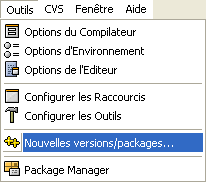
La fenêtre WebUpdate s'ouvre :
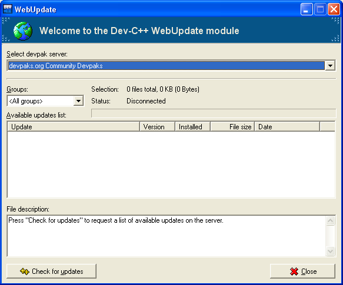
Dans la liste déroulante Select devpack server, sélectionnez devpacks.org community Devpacks comme ci-dessus, puis cliquez sur le bouton Check for Updates.
Le module de mise à jour de Dev-C++ va donc se connecter au serveur pour récupérer une liste de librairies, comme le montre la capture d'écran ci-dessous :
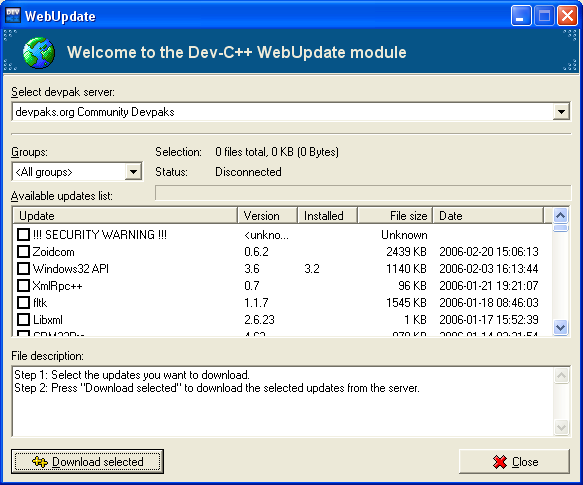
Lorsque le module de mise à jour à fini de récupérer la liste des librairies, vous devez sélectionner la librairie SDL et, pour finir, cliquer sur le bouton Download Selected.
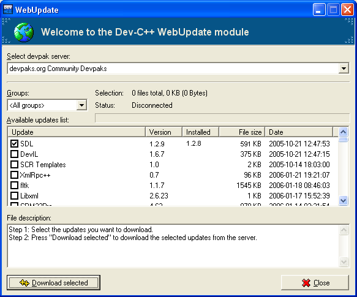
Le module de mise à jour télécharge donc la librairie SDL. :)
Lorsque la librairie SDL est entièrement téléchargée un message vous avertit, veuillez alors cliquer sur ok.
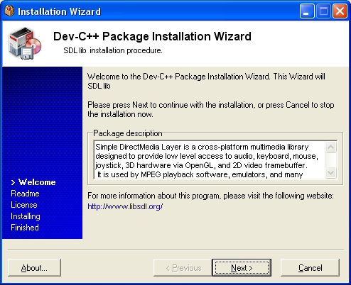
Pour finaliser l'installation de la librairie, l'Installation Wizard se lance, il ne vous reste plus qu'à accepter l'installation et ses formalités en cliquant sur Next.
Vous vous dites, comment ça une DLL ? On vient juste d'installer la librairie ! :colere:
Oui, oui c'est vrai ! Mais il vous faut encore une DLL. La DLL de la librairie SDL : SDL.dll. Ça fait beaucoup de SD... DL... LL...SD... C'est vrai. :p
Pour en revenir à notre DLL, vous devez pour commencer télécharger le fichier zip nommé SDL-1.2.9-win32.zip pour Windows.
Vous trouverez donc ce fichier sur le site officiel de Simple DirectMedia Layer dans le sous-menu Runtime Libraries: http://www.libsdl.org/download-1.2.php
Lorsque que vous avez récupéré le fichier compressé DL-1.2.9-win32.zip, ouvrez-le. Vous voyez dans ce .zip un fichier README-SDL.txt, et un autre fichier SDL.dll. Miracle ! :p J'exagère c'est vrai ! Le voila notre fichier DLL.
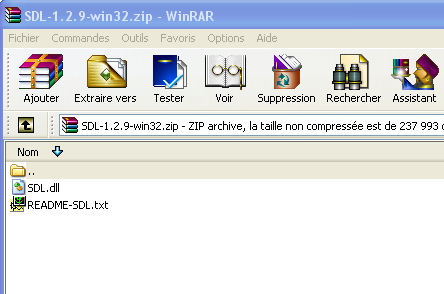
Ce fichier SDL.dll va vous être très utile. Car pour chaque projet qui utilisera la librairie SDL, il faudra copier ce fichier dans le dossier de votre projet, car sinon il est impossible de faire fonctionner votre programme ! ;)
Pour tester votre installation de la librairie, créez un nouveau projet dans Dev-C++ : Fichier >> Nouveau >> Projet.
Sélectionnez Empty project, cochez Projet C et donnez-lui un nom comme Test SDL, par exemple.
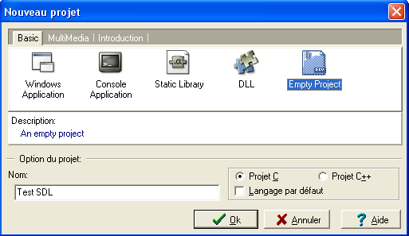
Cliquez sur le bouton Ok. Dev-C++ vous demande d'enregistrer le nouveau projet. Enregistrez-le dans un dossier qui lui est approprié. Par exemple dans un dossier nommé Test SDL.
Lorsque votre nouveau projet est crée, faites un clic droit sur le projet Test SDL, et cliquez sur nouveau fichier source.
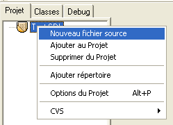
Enregistrez ce nouveau fichier source dans le dossier de votre projet, sous le nom de main.c.
Reste encore à paramétrer les options de votre projet.
Pour paramétrer les options, cliquez sur Projet dans la barre d'outils puis sur Options du Projet.
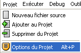
La fenêtre Options du Projet s'ouvre donc !
Pour notre petit test, il faut sélectionner Win32 GUI dans la liste Type, comme ci-dessous.
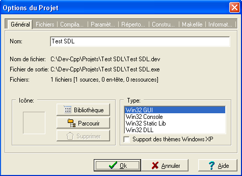
Ensuite sélectionnez l'onglet Paramètres.
Effectuez un copier/coller de la chaîne de caractères suivante -lmingw32 -lSDLmain -lSDL, dans le champ Éditeur de liens de la fenêtre Options du Projet. Voir la capture ci-dessous :
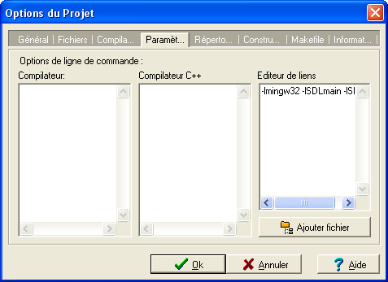
Puis, pour valider les options du projet, cliquez sur le bouton Ok.
Il ne vous reste plus qu'à écrire un petit bout de programme pour tester votre installation.
Bah oui, mais quoi ? o_O
Pour vous éviter de trop chercher, je vous donne un petit bout de programme juste après. Faites un copier/coller du petit code ci-dessous dans votre fichier main.c.
Maintenant, comme disait Napoléon : Ça se Corse !!! ;)
Les directives de préprocesseur
#include <stdlib.h>
#include <SDL/SDL.h>
Ces deux premières lignes sont les directives de préprocesseur. Elles servent donc à inclure les fichiers stdlib.hstdlib.h (comme d'habitude) et SDL/SDL.h qui se situent dans le dossier où est installé DEV-C++.
Vous avez sans doute remarqué que #include <SDL/SDL.h> était une nouvelle directive de préprocesseur. :o
Cette directive de préprocesseur va inclure la librairie SDL à notre programme. ;)
Quelques fonctions SDL
On crée une variable de type pointeur, qui nous resservira par la suite...
On charge dynamiquement puis on initialise la librairie SDL grâce à la fonction SDL_Init(), et ici on choisit le mode vidéo de la librairie avec SDL_INIT_VIDEO.
Si la fonction SDL_Init() est inférieure à 0, c'est que l'initialisation n'a pas fonctionné. On affiche donc qu'il est impossible d'initialiser la librairie avec la fonction printf(), et on affiche l'erreur, grâce à la fonction SDL_GetError().
Si le programme ne se déroule pas normalement, la fonction atexit() exécute la fonction SDL_Quit, ce qui ferme la librairie SDL.
atexit( SDL_Quit );
Si l'initialisation s'est déroulée correctement, on initialise le mode vidéo de la librairie, puis on crée une fenêtre (eh oui c'est trop cool :D ) de dimensions 640x480 pixels, et de profondeur 16 pixels, avec la ligne de code ci-dessous :
Si l'initialisation du mode vidéo a échoué, la variable screen est NULL. On affiche donc un message d'erreur... Comme pour l'initialisation de la librairie ! ;)
Enfin si la librairie et le mode vidéo se sont initialisés sans problème, on affiche une fenêtre pendant 3 secondes avec la fonction SDL_Delay() :
SDL_Delay( 3000 );
:o Bah !!! Tu avais dit 3 secondes, et ici il y a 3 000 !!!
Compilation et exécution du programme
Il ne vous reste plus qu'à compiler et exécuter le programme, ;) en cliquant sur le bouton Compiler & Exécuter (F9).
Si le programme de test fonctionne correctement, une fenêtre devrait s'ouvrir pendant 3 secondes, puis se fermer toute seule, comme ci-dessous. o_O
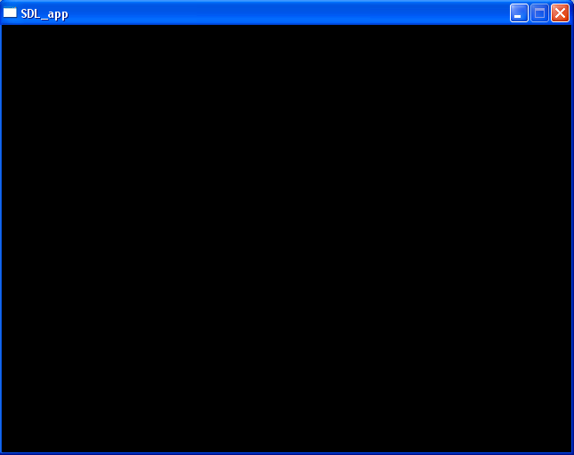
C'est grand !!! o_O C'est noir, tout noir !!! o_O Bah oui je sais ! Mais bon ! Il faut bien commencer par quelque chose. Et puis au moins, la librairie SDL est installée et fonctionne !!! :D
Votre librairie SDL est maintenant installée et opérationnelle. :D Il ne vous reste plus qu'à suivre attentivement les cours de développement du Site du Zér0. ^^
Cependant pensez à ne pas oublier de configurer vos projets si vous utilisez la librairie SDL, et n'oubliez pas la directive de préprocesseur :